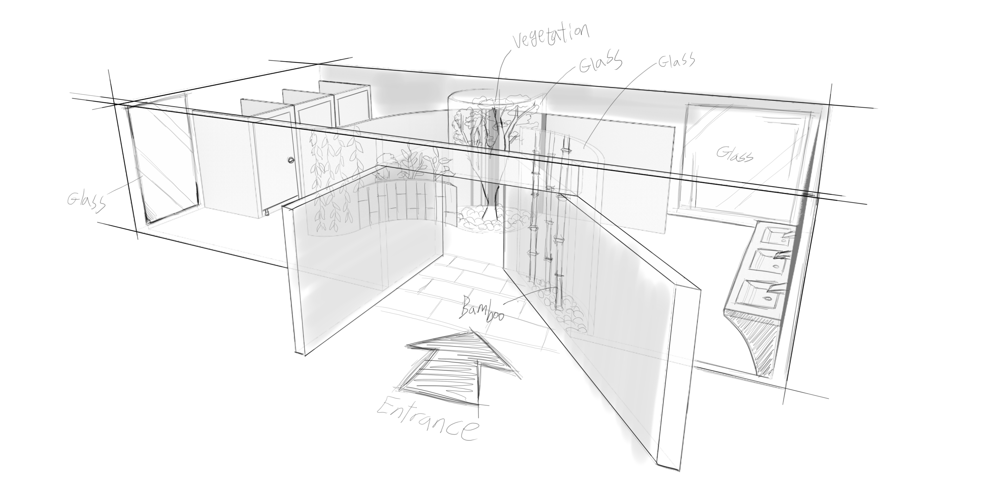

DESIGN
공중화장실(公衆化粧室)은 공공시민이나, 보호자 혹은 고객들을 위해서 용변을 볼 수 있게 설치한 화장실이다. 공공 시설이기 때문에 최소한 변기와 세면대는 설치되어 있어야 한다.
KEYWORD
- 오두막
- 숲
- 식물
CONCEPT
숲속의 오두막 같은 느낌을 주는 공중 화장실
- 이용자가 이동하기 편하게 중앙이 넓은 구조
- 창문으로 비치는 빛과 조경을 이용하여 숲의 느낌 강조
- 채광은 좋지만 밖에서는 안을 볼 수 없도록 설계
COLOR
식물을 이용하여 녹색빛으로 채우고 나머지 인테리어를 브라운 색상과 쿨그레이 사용
LIGHTING
태양광과 비슷한 색조의 조명 설치 및 낮에는 자연 채광 활용
MOTIVE
물고기를 잡는 트랩인 어살에서 모티브를 얻음
내부로 들어오기는 쉬우나 나가기는 어려운 어살의 형태에서 영감을 얻어
외부에서는 화장실의 입구를 찾기 쉽게 하고 내부에 있는 화장실 이용객들이 외부에서 잘 보이지 않게 함
SKETCH
COMPONENTS
FLOOR
유리 세라믹 자연석 타일
화장실은 기본적으로 물이 많이 튀는 장소이기에 발수 및 방수는 필수
미끄럼 방지 및 항균작용이 가능한 바닥재를 사용
자연의 느낌을 주기 위해 평범한 세라믹 타일이 아닌 자연석 타일 선정
VEGETATION
습기에 강한 식물
화장실에서 키우는 식물의 경우 빛이 잘 들지 않거나 습도가 높은 환경에서도 잘 자랄 수 있어야 한다.
화장실의 환경은 습도가 높고 환기가 잘 안되며 창문 위치에 따라서 채광이
안 좋을 수도 있다.
이러한 환경에서도 잘 자라고 공기정화 기능 또한 훌륭한
식물을 선정해야 한다.